O cuidado que atravessou as Ruínas.
Quatro linhas mumificadas, 16 concepts e uma lore original. As faixas conservam corpos de papel e seus registros; a alma continua na única rabiola. Novas artes e história propostas, sem integração.
Ler a lore completa · Pesquisa e fontes · Conferência · Prancha geral
Selacrábio · Os guardadores dos lacres
Aprende a enrolar uma faixa, proteger uma abertura e finalmente fechar câmaras contra ventos abrasivos. Não aprisiona almáticas: o selo se desfaz quando alguém oferece a linha sem puxar.
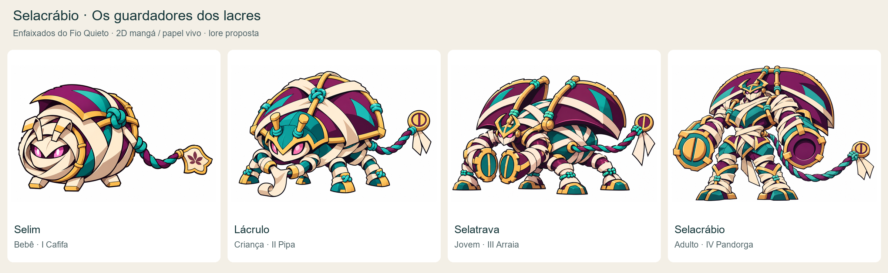
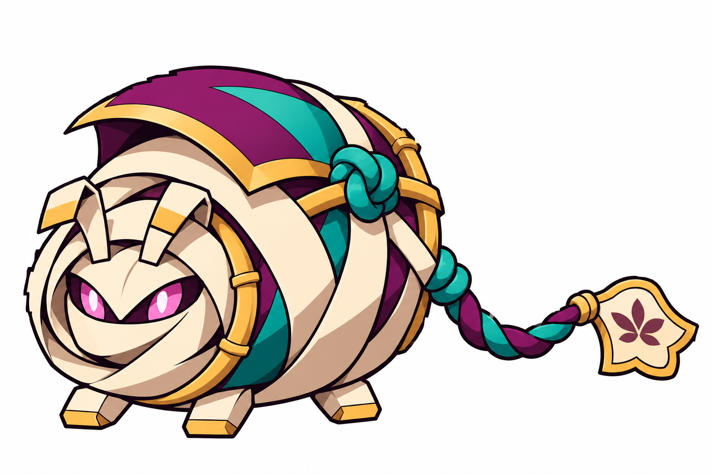
Selim
Bebê · I Cafifa
Rosto integrado no rolo; abas de apoio parcialmente visíveis, duas antenas curtas e rabiola única. Ficou com mais camadas e aro que o brief mínimo, mas sem torso/membros adultos.
Brief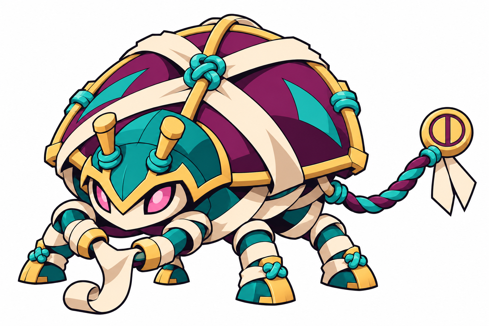
Lácrulo
Criança · II Pipa
Correção retirou uma pata central excedente. Quatro patas de apoio e dois braços com a faixa; duas antenas e rabiola. Couraça abaulada com X das faixas.
Brief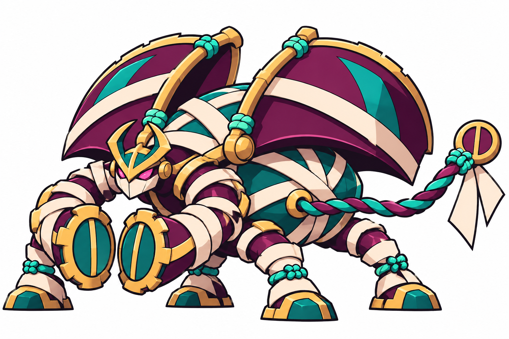
Selatrava
Jovem · III Arraia
Quatro patas e dois braços-prensa, dois élitros abertos e rabiola. Fase baixa e larga antecede a redistribuição da carga na forma adulta bípede.
Brief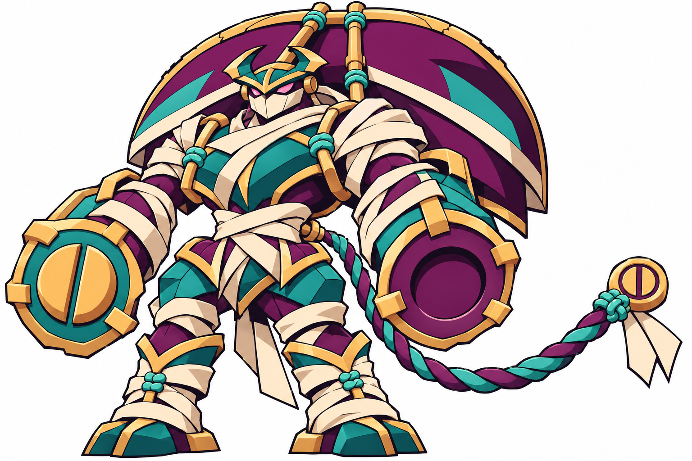
Selacrábio
Adulto · IV Pandorga
Duas pernas e dois braços-prensa, duas portas-élitros atrás dos ombros. Selos complementares legíveis, cabeça pequena com olhos rosa e rabiola completa. Construção rica e sombra em blocos; extremidades próximas das margens, completas.
BriefChart JSON · História da família
Ibiscrito · Os escribas das faixas
As faixas recebem marcas de vento, não almas. O que começa como um risco vira um mapa de sons; o adulto registra avisos e devolve mensagens sem alterar o que ouviu.
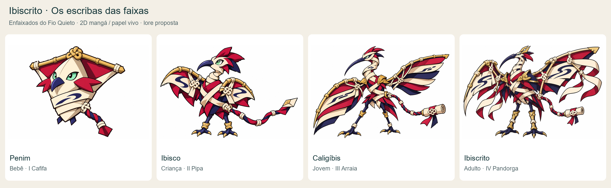
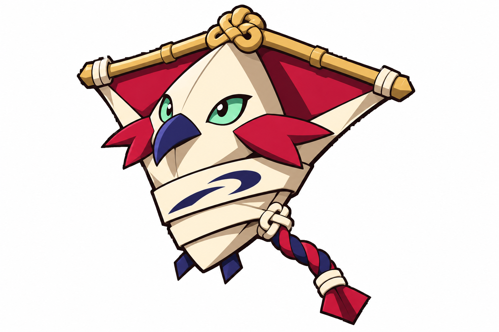
Penim
Bebê · I Cafifa
Rosto e corpo na pipa, duas pequenas abas, dois pés em abas, bico curto e olhos menta; faixa marcada e rabiola. Massa simples em contraste com a ave adulta.
Brief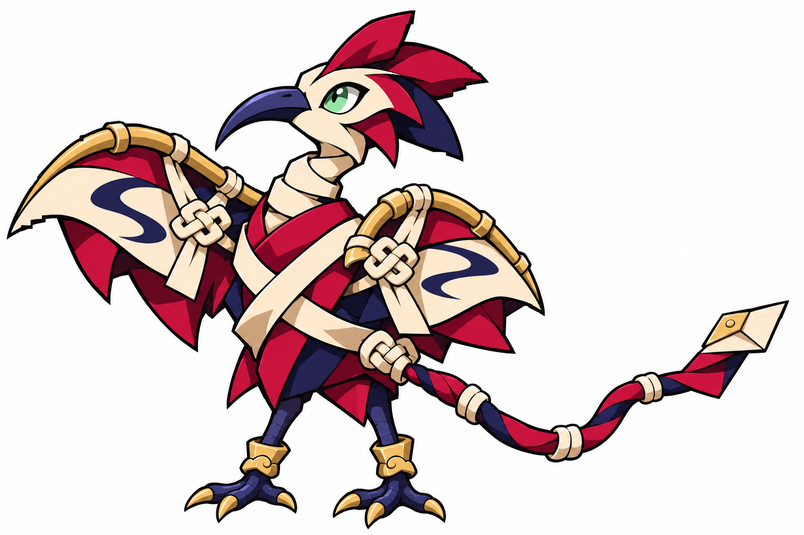
Ibisco
Criança · II Pipa
Duas pernas e duas asas curtas com raízes; bico e pescoço mais desenvolvidos que o bebê. Uma rabiola. Pescoço mais alongado que o brief, mas proporção de cabeça/asa ainda infantil.
Brief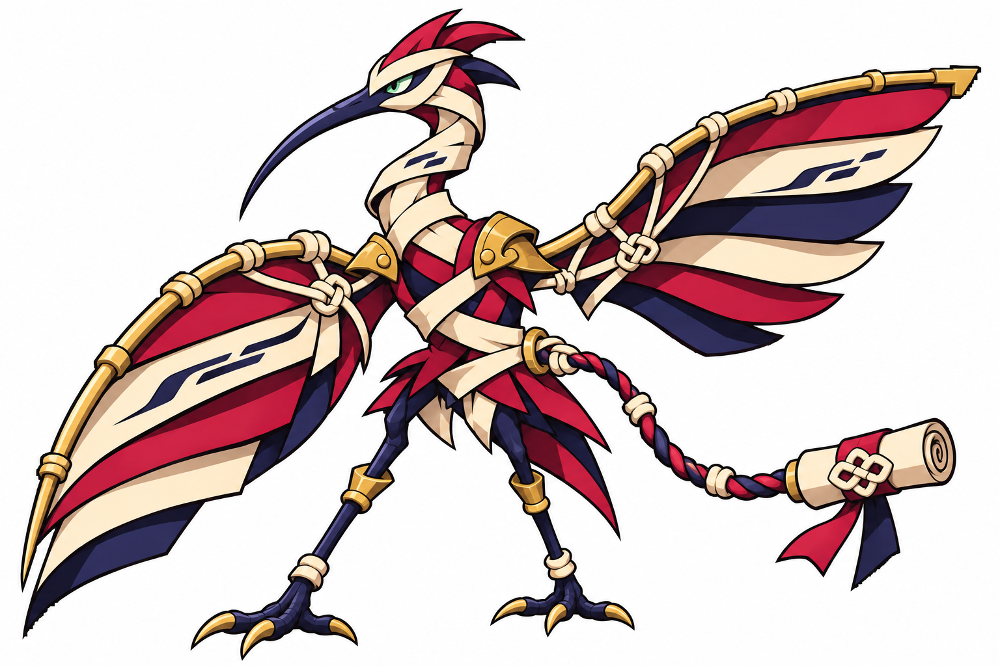
Caligíbis
Jovem · III Arraia
Duas pernas longas e duas asas de lâminas largas, bico curvo e rabiola-pergaminho. Menos manto e mais intervalo entre lâminas que no adulto. Contagem exata de seis lâminas por asa não é uniformemente legível; não prometer rig com essa contagem.
Brief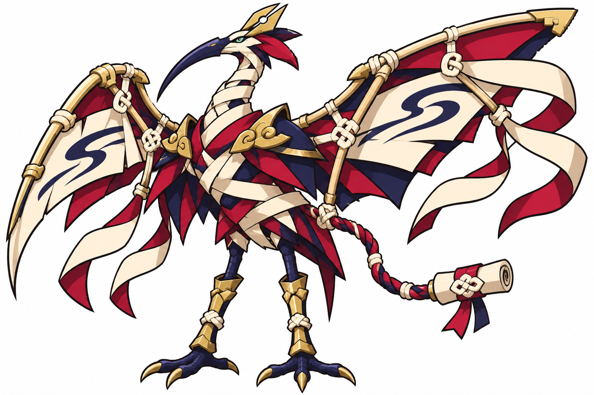
Ibiscrito
Adulto · IV Pandorga
Duas pernas e duas asas amplas, pescoço enfaixado, bico longo curvo, crista de pena e rabiola-pergaminho. As faixas saem de raízes de asa; sem braços humanos adicionais.
BriefChart JSON · História da família
Crocáfago · Os porteiros das águas
Começa protegendo uma poça com o próprio corpo; aprende a abrir o dorso em abrigo e se torna uma passagem móvel sobre correntes perigosas. Só transporta quem sobe por vontade própria.
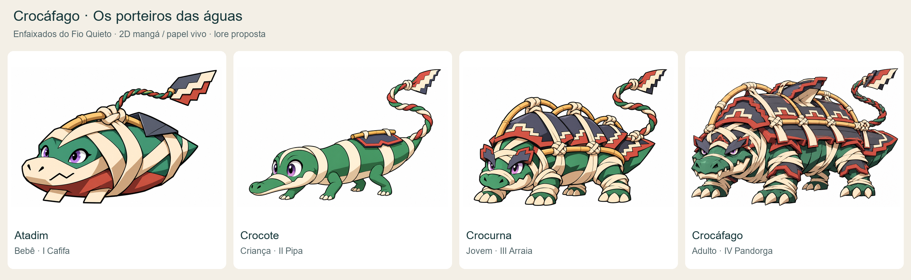
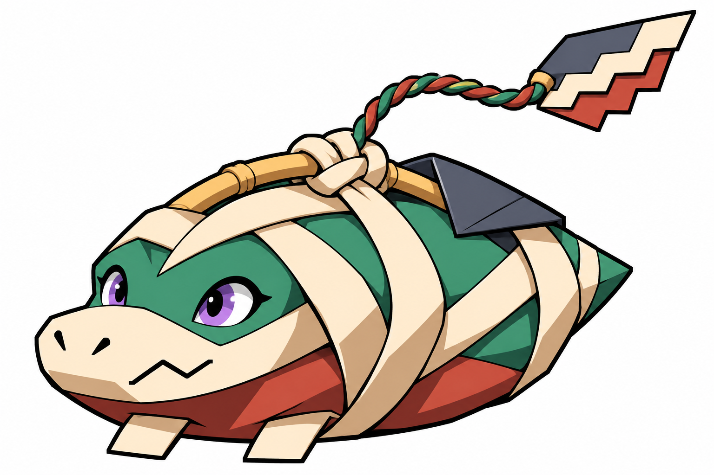
Atadim
Bebê · I Cafifa
Cabeça/corpo num estojo curto, dois apoios em abas e ponto posterior; faixa, aba dorsal pequena e rabiola. Olhos lavanda, sem dentes adultos.
Brief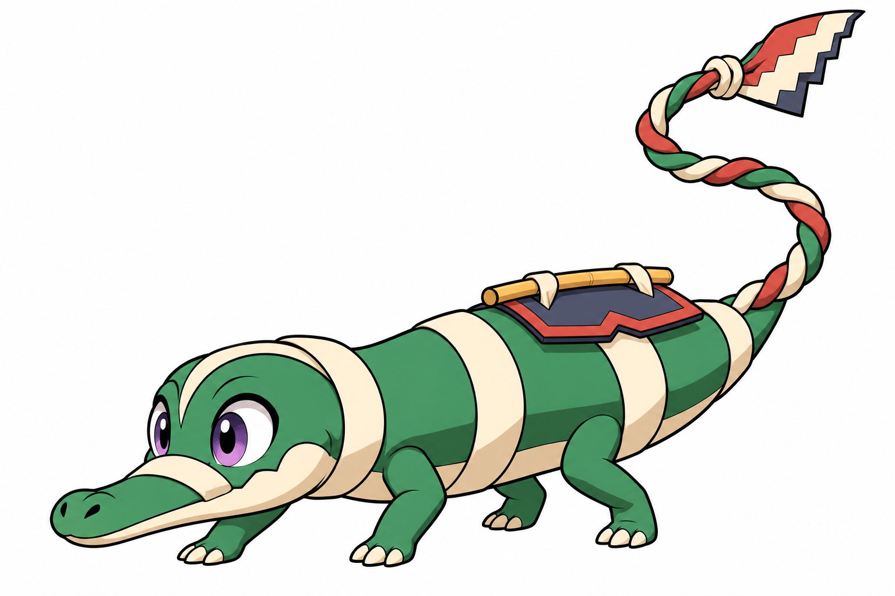
Crocote
Criança · II Pipa
Revisão retirou a couraça adulta em miniatura; quatro patas pequenas, corpo mais esguio, focinho maior e uma única placa dorsal. Rabiola distinta da cauda. Face tem curvas mais suaves e olhos maiores, coerentes com criança, mas requer calibração em futuras vistas.
Brief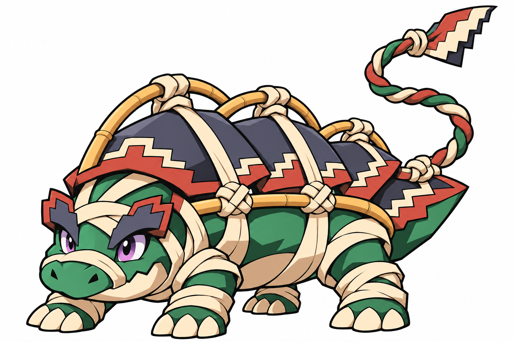
Crocurna
Jovem · III Arraia
Estudo inicial da criança realocado como jovem após correção da criança. Quatro patas, três placas/arqueamentos dorsais, olhos grandes e sem grevas adultas. Jovem robusto; difere do brief atlético inicial, cuja versão foi abandonada. Original preservado.
Brief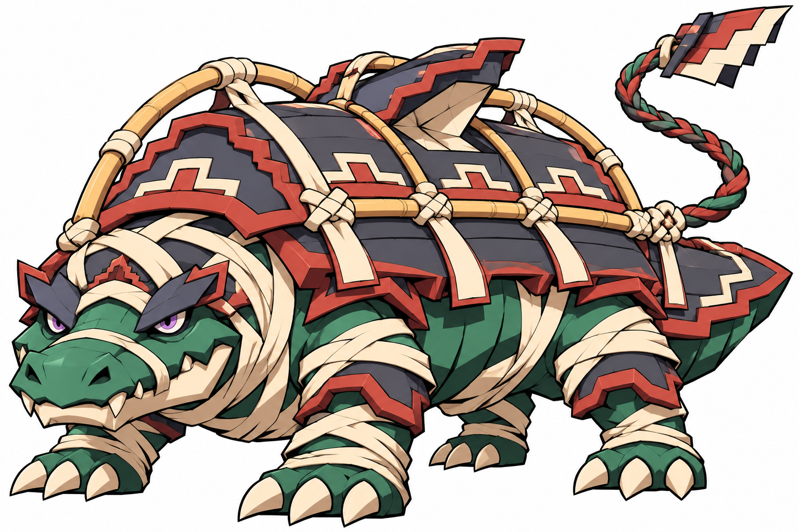
Crocáfago
Adulto · IV Pandorga
Quatro patas com garras, couraça em três tampas e uma parcialmente aberta; faixas conectam raízes e apoios. Uma cauda corporal compacta e uma rabiola trançada distinta. Focinho curto proposital, olhos lavanda e proteção adulta.
BriefChart JSON · História da família
Velaravan · Os guias do vento adormecido
De pequeno casulo que acompanha passos a condutor de rotas. A corcova guarda faixas que vibram como mapas sonoros. O adulto reduz o ruído da tempestade para o grupo ouvir o próximo marco.
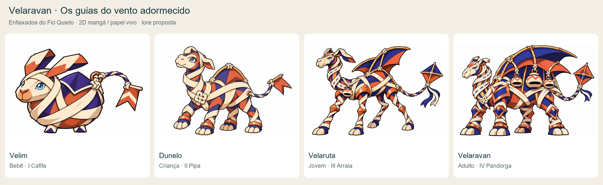
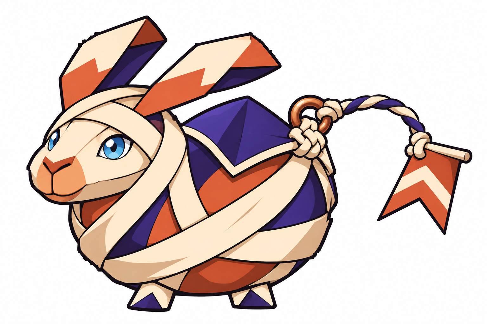
Velim
Bebê · I Cafifa
Corpo-embrulho com dois apoios em abas, duas orelhas compridas dobradas, pequena corcova e uma rabiola. Rosto arredondado de estágio inicial; não é cavalo adulto miniaturizado.
Brief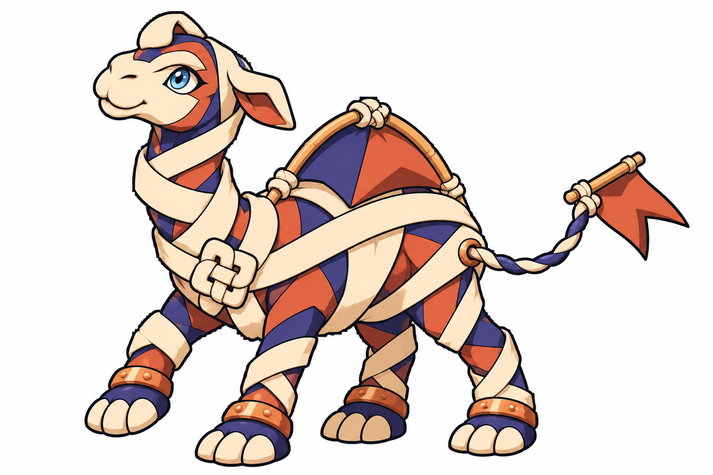
Dunelo
Criança · II Pipa
Quatro patas baixas, cabeça camelídea, corcova pequena, olhos azuis e uma rabiola. Os pés saíram com três separações visuais, enquanto jovem/adulto usam dois apoios digitais; unificar vistas antes de rig.
Brief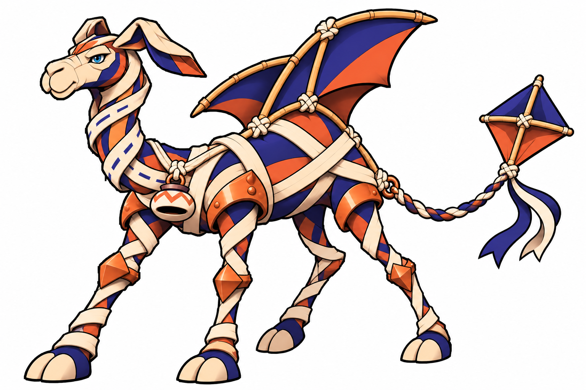
Velaruta
Jovem · III Arraia
Quatro patas compridas, focinho camelídeo, um ressonador e dois painéis menores na corcova. Um único terminal de rabiola com abas. Proteção parcial e massa leve em comparação ao adulto.
Brief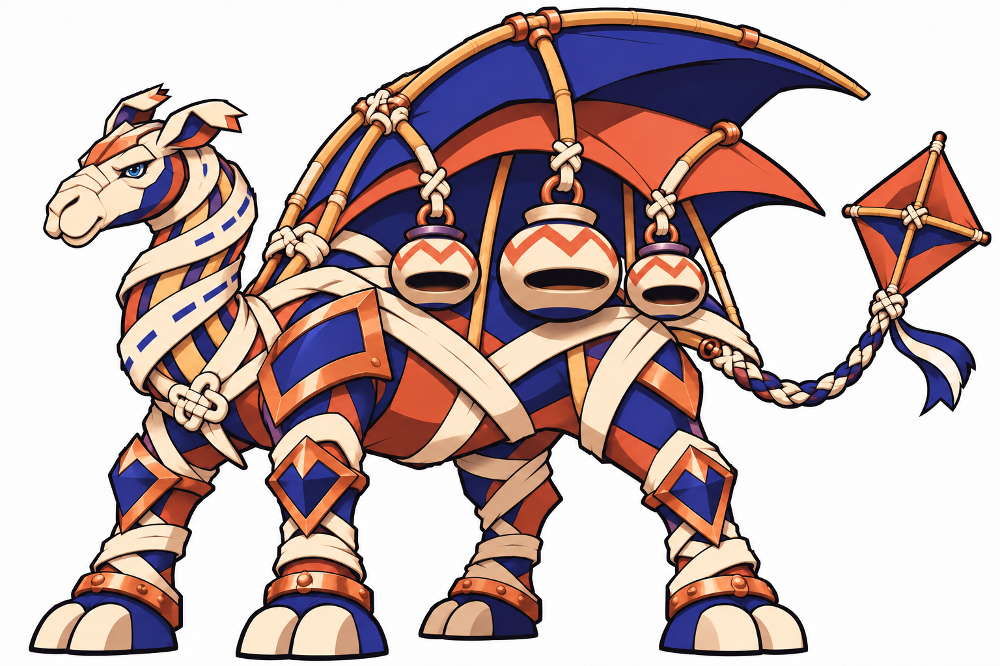
Velaravan
Adulto · IV Pandorga
Correção dirigida deu focinho camelídeo e reduziu orelhas. Quatro apoios, dois painéis na corcova e três câmaras cerâmicas com raízes próprias, rabiola única. Estrutura de sombra plana; bordas completas apesar das margens estreitas.
BriefChart JSON · História da família
Ferramenta integrada image_gen; prompts e registros junto de cada PNG. Concepts de fundo branco, ainda sem recortes, vistas adicionais, rig ou animação.